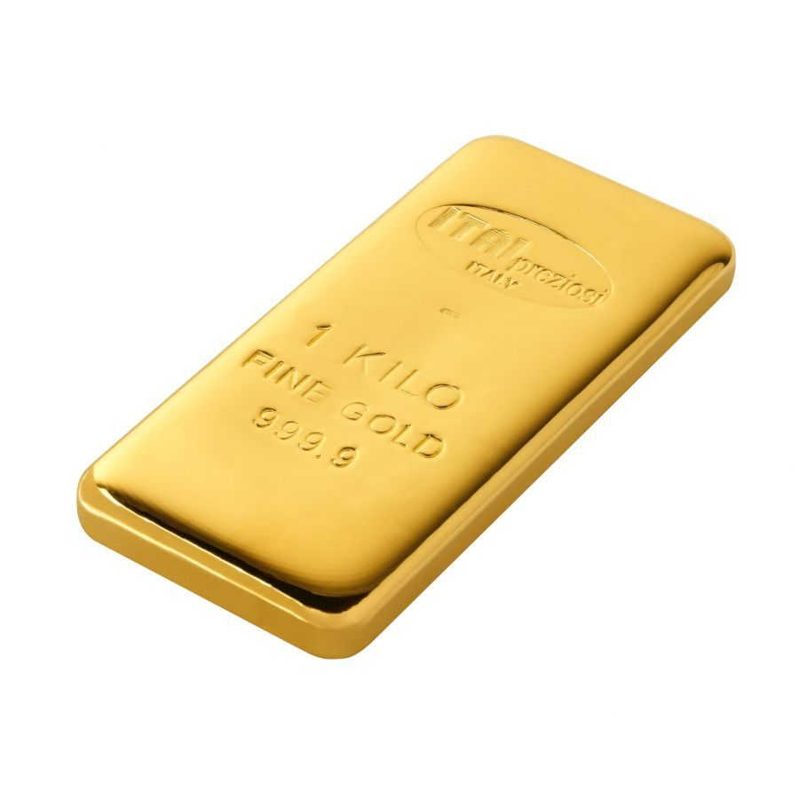

| Proprietà |
Valore |
| Nome Elemento |
L'Oro (Au) è un elemento chimico appartenente al Gruppo 11 della tavola periodica. È noto per il suo valore monetario ed è molto ricercato. |
| Massa Atomica |
196,96657 u |
| Numero Atomico |
79 |
| Gruppo |
11 (Tavola Periodica) |
| Periodo |
6 (Tavola Periodica) |
| Temperatura di Fusione |
1064 °C |
| Temperatura di Ebollizione |
2836 °C |
| Densità |
19,32 g/cm³ |
| Elettronegatività |
2,54 (Scala di Pauling) |
| Anno di Scoperta |
Epoca Preistorica (Uno dei primi metalli scoperti dall'uomo) |
| Abbondanza |
Presente nella crosta terrestre in basse concentrazioni, in depositi primari e secondari. |
| Caratteristiche |
- Metallo prezioso noto per il suo valore economico.
- Si forma nelle profondità dello spazio attraverso eventi catastrofici come collisioni tra stelle di neutroni.
- Probabilmente il primo metallo utilizzato dall'uomo, intorno al 6000 a.C.
|
| Applicazioni Tecnologiche |
- Utilizzato nella produzione di componenti elettronici (chip, circuiti stampati, connettori).
- Impiegato in campo medico (apparecchi dentali, protesi ortopediche).
- Nanoparticelle d’oro utilizzate per veicolare farmaci (es. trattamenti contro il cancro).
|
| Localizzazione Giacimenti |
- Presente nella crosta terrestre.
- I principali giacimenti si trovano in Sudafrica, Australia e Russia.
|
| Effetti sulla Salute |
Generalmente sicuro per l’uomo e non provoca reazioni negative. Alcune ricerche suggeriscono effetti terapeutici. |
| Effetti sull'Ambiente |
L'estrazione dell'oro è dannosa, causando deforestazione, perdita di biodiversità, inquinamento da polveri sottili ed emissioni di gas serra. |
